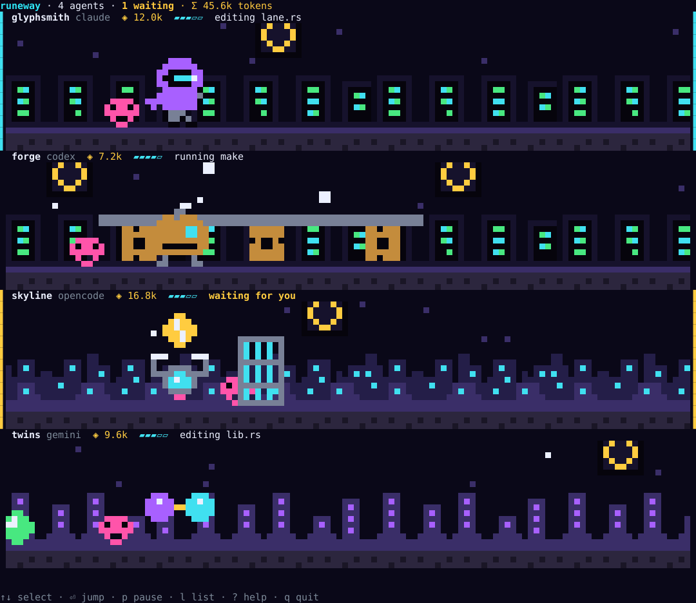
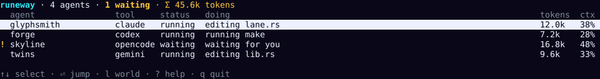

cybercore / runeway · open source
EVERY AGENT GETS A LANE.
Runeway turns the coding agents you run into a side-scrolling arcade in your terminal. See who is reading, who is editing, whose tests just failed, and who is waiting at the gate for you.
1 CREDIT = cargo install --git https://github.com/cybercoretech/runeway
runeway --demo cast, drawn in your browser with Runeway's own sprites. In your terminal each lane is a real agent.LEVEL 1 · WHAT IT WATCHES
ONE LANE PER AGENT

runeway --demo, 120×52 cells).Runeway reads what your agents already write down. It never talks to them and never touches the network.
- agent-deckwhich sessions exist, and which are waiting for you
- Claude Codetranscripts for tool calls and tokens; session records for live status
- Codexrollouts for commands, results and the context window
- OpenCodeits database, opened read-only, for tool calls and tokens
- Gemini and othersshown with agent-deck's status
Agents you start outside agent-deck appear too, once their transcript has been written in the last 10 minutes.
LEVEL 2 · CHOOSE YOUR AGENT
THE CAST
LEVEL 3 · MOVE LIST
WHAT THE RUNNER DOES
LEVEL 4 · CONTROLS
KEYS AND FLAGS
IN THE WORLD VIEW
- ↑↓ kj
- select an agent
- Enter
- go to it: its tmux session, or the terminal window running it
- p
- pause or resume the animation
- l
- switch to the plain list and back
- ?
- show the keys
- q Esc Ctrl-C
- quit; your terminal is always restored
FLAGS
--demo- four scripted agents on a one-minute loop
--lowres- one pixel per cell, for SSH or slow terminals
--fps N- frame rate while something moves, 5 to 60 (default 30)
--no-discover- only agent-deck's sessions
--no-agent-deck- skip agent-deck
--claude-dir--codex-dir--opencode-db- read from somewhere else

runeway status.LEVEL 5 · RULES OF PLAY
IT ONLY WATCHES
- READ-ONLYNever writes to, copies or deletes agent data or transcripts.
- OFFLINEMakes no network connections at all.
- LABELS ONLYShows a short label like
editing lib.rs, never file contents, full commands, prompts or tool output. - RECENT PASTReads at most the last 256 KiB of each transcript when it starts.
INSERT COIN
PLAY IT
# needs Rust 1.89 or newer
$ cargo install --git https://github.com/cybercoretech/runeway
$ runeway --demo # try it with scripted agents
$ runeway # watch your real agents
$ runeway check # which sources it found
$ runeway status # one line per agent, then exitWHAT WORKS TODAY
- World view, list view,
statusandcheck - Claude Code, Codex and OpenCode activity and tokens
- Agents outside agent-deck, found automatically
- Enter jumps to an agent (tmux, or Hyprland windows)
GOOD TO KNOW
- Built and tested on Linux; other systems are untested.
- Needs a true-colour terminal;
--lowreshelps over SSH. - Gemini and other agents show agent-deck's status only.
- Not on crates.io yet: install from GitHub as above.